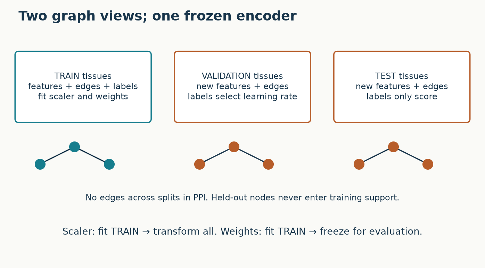
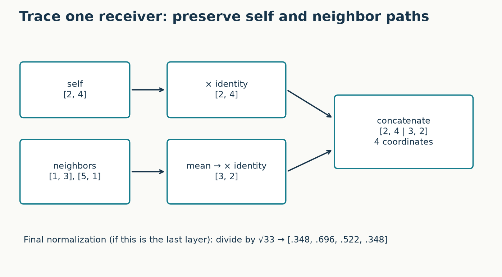
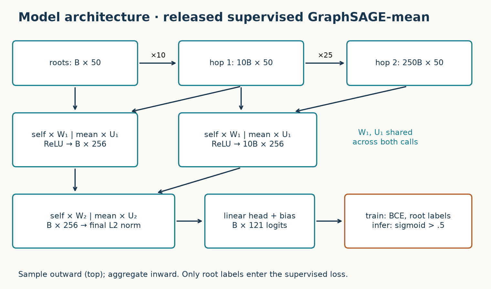
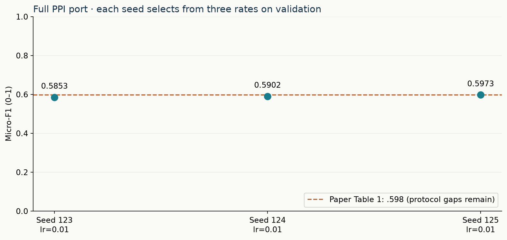

Year 3 · Quarter 1 · Lesson 083
GraphSAGE: sample, aggregate, generalize
Start with retrieval — before reading¶
Close lesson 82. Write three answers: (1) What could a test node contribute during Cora training even though its label was hidden? (2) Why is the GCN coefficient not an ordinary neighbor mean? (3) Which parameters belong to a node, and which are shared across nodes? Keep your answers; revise them at the end.
Today's win: trace a sampled two-layer GraphSAGE computation, implement its mean aggregator, and demonstrate that training cannot access held-out graphs. The core route takes about 40 minutes; the full experiment is a separate executable lab. This serves our relational mission: new database rows need usable representations before we have labels for them.
1 · From a fixed graph to a function for new nodes¶
Lesson 82 used the whole Cora graph during training and masked its labels. That experiment did not demonstrate generalization to absent nodes. GraphSAGE asks us to learn a shared function of a node's features and neighborhood, and then apply it to previously unseen nodes or entirely new graphs. No learned table of one vector per training ID is necessary. In a database, the corresponding move is to encode a new customer using attributes and eligible neighboring records.
Be precise about the comparison. GCN also has shared weights and can be applied to new graphs with compatible features. Its Cora experimental protocol was transductive; the matrix operation is not inherently forbidden from induction. GraphSAGE combines explicit inductive experiments, local feature aggregation, and fixed-size sampled computation. Sampling alone does not create an inductive evaluation: sampling the entire graph during training still allows held-out features into the computation.
The primary paper, Hamilton, Ying & Leskovec, §3 and §4, distinguishes two tests: future nodes in evolving information graphs, and new tissue graphs in PPI. We reproduce the latter setting. The full archive has 56,944 nodes, 50 features, and 121 binary labels. A protein may have several functions, so this is multilabel classification. Predicting one class with argmax would change the task.
2 · Which graph exists at each phase?¶

Training uses only nodes and edges from training tissues. A loss mask is insufficient: held-out nodes must also be absent from the training neighbor table. Fit feature standardization on training rows, then reuse its mean and scale at validation and test time. These are two separate access rules. Masking labels cannot repair a scaler fitted on future data.
At inference we expose the query graph's features and edges, keep the learned weights fixed, and predict its labels. This is legitimate because those features and edges are assumed available at prediction time. PPI graphs are disjoint across splits; the loader's full inference table therefore does not create a training-to-test bridge. A future relational application must independently enforce time eligibility. An inductive split is not automatically a temporal split.
Predict an intervention: if we replace every held-out feature with 10,000 before training, should the fitted weights change? Under this contract they must not. Predictions on those changed nodes may change at inference. The lab checks the training invariance over a complete epoch, including optimizer updates. Its graph audit also verifies that no connected component crosses a split.
3 · The mean is simple; the paths must stay distinct¶
Paper Algorithm 1 aggregates neighbor states, combines that summary with the receiver's own state, applies shared weights and a nonlinearity, and normalizes the result. For a mean aggregator, the summary is
m_v = (1 / |S(v)|) Σ_{u in S(v)} h_u.
Neighbors form a multiset: the order should not matter, but repeated sampled IDs count repeatedly. Separate self information is valuable: “this node has a high value” differs from “its neighbors have a high average.” The paper's GCN-style alternative blends self and neighbors before transformation. That also differs from the symmetric augmented-degree weighting of lesson 82.
Our named executable target follows the released mean implementation, which computes
m = neighbor_h.mean(dim=1) # [B, S, d] -> [B, d]
self_branch = self_h @ W_self # [B, d] @ [d, 128]
neighbor_branch = m @ W_neighbor # [B, d] @ [d, 128]
h = torch.cat([self_branch, neighbor_branch], dim=-1) # [B, 256]
This is not cat([self, mean]) @ W with an unrestricted mixing matrix and the same output width. It preserves two independently transformed blocks. A block-diagonal matrix could express this restricted operation; an arbitrary dense matrix additionally mixes the blocks. A common modern SAGE layer that sums two transforms is another variant. Names alone are not enough to identify a reproduction.

In the illustrated case the receiver is [2,4], neighbors are [1,3] and [5,1], and both transforms are identity. The mean is [3,2]; the concatenated result is [2,4,3,2]. Its final unit-length version is approximately [.3482,.6963,.5222,.3482], dividing by √33. This deliberately uses identity weights to make arithmetic visible; the trained network learns non-identity matrices. Replacing a neighbor changes only the neighbor branch at this layer, but later layers can mix earlier coordinates.
Code versus pseudocode: released models.py and supervised_models.py use ReLU after the first layer, identity activation after the last aggregator, and L2 normalization once at the final embedding. Algorithm 1 displays normalization within the recursion. This lab follows the release and states the discrepancy, rather than mixing the two silently.
4 · Sample outward, compute inward¶
A two-layer prediction needs first-hop states, which in turn need second-hop features. Start with a batch of root nodes, sample their neighbors, then sample neighbors of those neighbors. Only after collecting these dependencies can we aggregate from the outside inward. The two first-layer applications share the same weights: one computes root states, the other computes first-hop states. The second layer consumes those computed states.

Model architecture · complete supervised PPI path¶
The release flags say samples_1=25, samples_2=10. Its sampling loop reverses the layer list: from each root it collects 10 immediate neighbors, then 25 neighbors per immediate neighbor. Our explicit outward fanouts are therefore [10,25]. For batch size 512, the materialized support has 512 roots, 5,120 first-hop occurrences, and 128,000 second-hop occurrences. These are occurrences, not necessarily unique node IDs. Repeated IDs and shared neighborhoods can reduce unique nodes without reducing this implementation's tensor sizes.
First-layer states have 256 coordinates (128 self + 128 neighbor). Second-layer states again have 256, followed by unit normalization and a biased 256→121 head. Binary cross-entropy is averaged over batch nodes and labels. The release default has no dropout and no weight decay. It initializes weights with Glorot uniform, uses Adam, and clips each gradient value to [-5,5]. That is elementwise clipping, not clipping the total gradient norm.
The root loss uses root labels only. Support nodes provide features; they do not become extra supervised examples simply because they appeared in a batch. Over an epoch they may separately appear as roots.
Sampling bounds the expansion, but it introduces variability and can miss rare informative neighbors. If a node has one decisive neighbor among 100, sampling 10 without replacement includes it with probability 0.1. The sampled mean is unbiased for the full mean under uniform sampling from the true list, but a nonlinear multilayer prediction generally is not an unbiased estimate of full-neighborhood prediction.
There is another approximation in the release: each adjacency row is capped or padded to 128 entries once, then minibatches sample its columns. High-degree neighbors excluded from this fixed table cannot appear later. Low-degree rows are filled by sampling with replacement; duplicates alter that table's empirical mean. We reproduce this table construction. At each hop the released sampler shuffles columns with one shared permutation across rows; the samples are not independent per row. These details can affect variance even when marginal sampling looks reasonable.
5 · Mean, pooling, LSTM: what information survives?¶
| Aggregator | Mechanism | What to test |
|---|---|---|
| Mean | Average neighbor vectors | [0,2] and [1,1] both average to 1 |
| Pooling | Shared learned transform of each neighbor, then coordinatewise max | A rare transformed feature can survive even when a mean dilutes it |
| LSTM | Process a randomized neighbor sequence | Reordering a sequence generally changes a single output |
Mean and max pooling are invariant to neighbor ordering. An LSTM is not inherently invariant; randomizing order during training is a procedure to cope with sets, not a proof of invariance. Pooling also discards multiplicity when max is unchanged. No aggregator universally preserves all multiset information. Later lessons on GIN will formalize this limitation.
The paper's §3.3 compares these designs. This lab implements and evaluates mean only. It does not infer a ranking among aggregators from our single model's result. The unsupervised variant uses a neighborhood-based contrastive objective; it is not the supervised multilabel objective used here.
6 · Reproduce the full named experiment, then assess the gap¶
Our target is Table 1, supervised GraphSAGE-mean, PPI: micro-F1 = 0.598. The paper uses 20 training tissue graphs, two validation graphs and two test graphs. Its appendix specifies ten epochs, batch size 512, width 256, and a supervised learning-rate sweep over .01, .001 and .0001. We run the full released archive, all ten epochs and all three rates. Test labels never select a rate or an epoch.
Author reference, freshly executed: 3 seeds × three learning rates × ten epochs on the full archive. Mean test micro-F1 0.59093, sample SD 0.00606. This SD describes seed/search variation on the same split.
| Seed | Validation-selected learning rate | Test micro-F1 |
|---|---|---|
| 123 | 0.01 | 0.58528 |
| 124 | 0.01 | 0.59019 |
| 125 | 0.01 | 0.59733 |
Full per-epoch traces and results.

The selection rule here chooses the learning rate with the largest full-validation micro-F1 after ten epochs. Ties keep the first listed rate. The test set is evaluated once for each selected model. Each seed repeats the full search; no seed is discarded. We report micro-F1 pooled over all node-label decisions, not an average of batch F1 scores. For multilabel data this is not ordinary accuracy.
Why can a full-size run still differ from the paper? The exact winning historical configuration, seed identities, replicate aggregation and complete selection recipe are not supplied with the table. The public code has implementation choices that differ from the pseudocode. Our modern PyTorch port changes RNG streams and numerical kernels; it uses sorted neighbor lists and independent deterministic evaluation RNG streams. The original TensorFlow run is NOT_RUN. The full reproduction contract audits each choice and the remaining uncertainty. A close metric would not erase these gaps, and an imperfect match is useful evidence to investigate rather than a reason to tune on test.
The status INCOMPARABLE means that historical result parity is not established; it does not mean the full PPI run was skipped. Training extent and protocol identity are separate questions. Our measurements support a reproducible port result on the released inductive split, not a claim about all graph tasks or all GraphSAGE variants.
7 · Lab: implement, intervene, explain¶
Open the student notebook, readable preview, or solution. All model, sampling, preprocessing, selection and training code is inline. The notebook downloads the original archive and checks its SHA-256 before loading it; no hidden repository model is required.
- TODO / CHECK: construct the induced training neighbor lists. Reject a held-out sender and a held-out receiver. Merely filtering the loss should fail this exercise.
- TODO / CHECK: collect sampled supports in outward order. Check both the tensor sizes and actual IDs, including a zero-degree node's sentinel route.
- TODO / CHECK: implement the separate self/neighbor transforms and concatenation. Check an independent hand result and neighbor reordering. These functions are called by the actual trainer.
- Run the one-epoch teaching diagnostic. Then run the full experiment cell or the exact commands in the reproduction contract. A one-epoch result has no paper-parity interpretation.
- EXIT: submit the JSON result, your graph-access audit, and a paragraph explaining why “test labels hidden” was sufficient for L082's declared task but insufficient for this one. Include the output dimensions and outward fanout order, the selected rate, and one remaining historical reproduction gap.
Change a mean to a sum deliberately. Predict which check fails and why node degree now changes the scale. Restore it. After two days, reconstruct the three support tensors without looking at the code. After one week, explain the complete path from a newly arrived row to its predicted label, naming exactly which data were available during training.
Where this leads¶
Mean aggregation gives every sampled neighbor equal weight. Lesson 84's planned GAT unit asks whether learned attention can distinguish neighbors before combining their messages. It must still answer our access and sampling questions; attention does not excuse leakage. For now, use the reference card and read §3, Algorithm 2 and Appendix C of the primary paper. Ask the agent follow-up questions about any tensor shape, sampling decision or mismatch you cannot explain from memory.